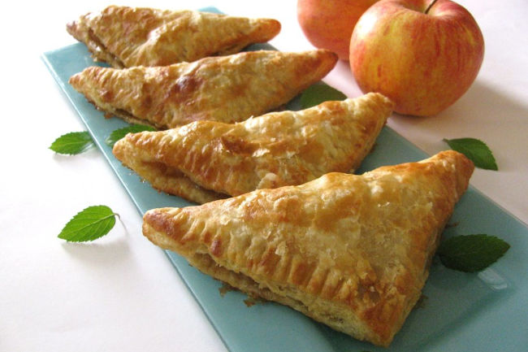

Пирожки из слоеного теста с сыром фета и зеленым луком
Порции: 12
Время подготовки: 20мин
Время приготовления: 20мин
Ингредиенты
1) 250 гр Сыр фета
2) 3 стебля Зеленый лук
3) 1 шт Яйцо beaten
4) 1 упаковка Слоеное тесто
5) 1 шт Яичный желток
6) ½ ч.л. Черный молотый перец
Процесс приготовления
1. Разогреть духовку до 190°C.
2. Обычно для несладких пирожков используется дрожжевое слоеное тесто.
Бездрожжевое тесто даст больше слоев, а дрожжевое будет более плотным и будет лучше
удерживать начинку. Какое именно тесто использовать - решать Вам.
3. Сыр фета раскрошить.
4.Зеленый лук мелко нарезать.
5. 1 яичный желток взбить с одной столовой ложкой воды.
6. В небольшой миске взбить 1 яйцо. Добавить раскрошенный сыр, нарезанный
лук и немного черного молотого перца. Аккуратно перемешать начинку для пирожков.
7. Слоеное тесто немного раскатать в одном направлении и разрезать на 12 квадратов.
8. Выложить в центр куска теста примерно 1 столовую ложку с горкой начинки.
Смочить края теста водой с помощью кисточки и сложить по диагонали, формуя треугольный
пирожок. С помощью вилки плотно прижать края теста, чтобы начинка не вытекала.
9. Смазать верх пирожков яичным желтком, взбитым с водой.
10. Выпекать в течение 20 минут до золотистого теста.
11. Подавать теплыми или комнатной температуры.